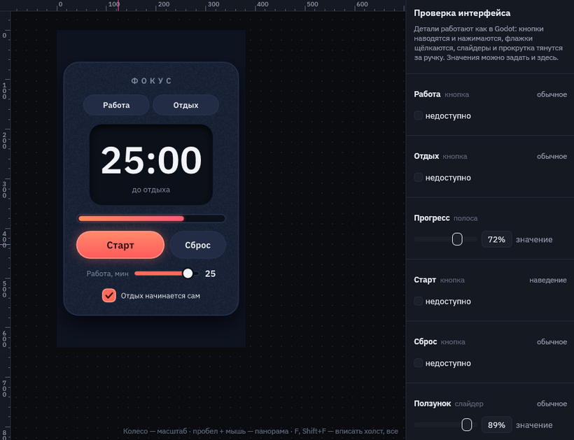
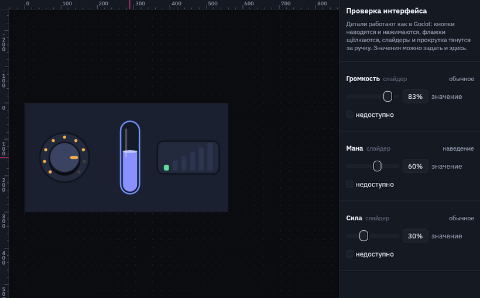
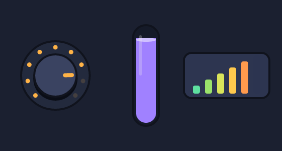
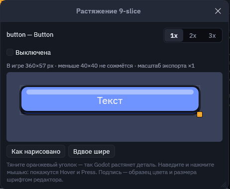
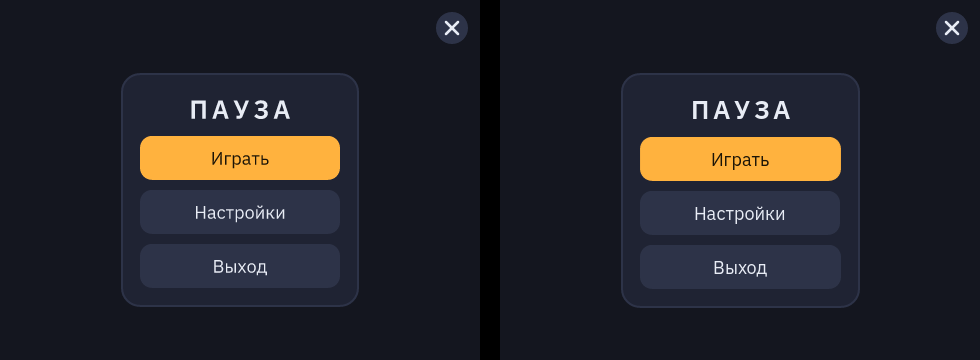
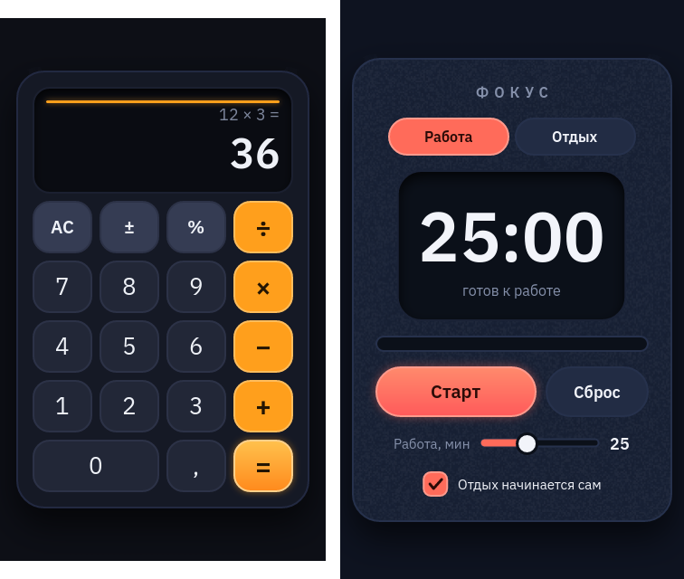

Экспорт и внешние программы
Как сцена из Motif попадает в игру: кадры PNG, видео, палитры, пикселизация в PixaTool одной кнопкой и командная строка для сборки игры.
Экспорт кадров

Кнопка «Экспорт» вверху справа открывает это окно:
- Кадров в секунду — сколько кадров снять с анимации. Для пиксель-арта обычно 8–12.
- Масштаб — пикселей на единицу артборда: 1 даёт размер артборда, 2 — вдвое больше.
- Сглаживание краёв. Перед пикселизацией его лучше выключить: края станут жёсткими, и пикселизатор не будет придумывать промежуточные оттенки.
- Прозрачный фон — без цвета артборда, для спрайтов.
- «Сохранить кадры…» снимает выбранную анимацию в папку:
ИМЯ_0000.png,ИМЯ_0001.pngи так далее. - Видео — анимация одним файлом MP4, WebM, GIF или APNG, см. «Видео».
- «Выгрузить в Godot…» — все анимации персонажа сразу в сцену Godot, см. «Анимации в Godot».
- «Сохранить UI-набор…» — кнопки и панели для интерфейса игры, см. «UI-наборы».
- PixaTool внизу окна — те же кадры сразу после пикселизации, см. ниже.
Холсты при экспорте
Если в файле несколько холстов, вверху окна «Экспорт» появляется выбор, как «Use Artboards» в Illustrator: «Открытый» сохраняет только открытый холст, «Все» — каждый холст:
- Кадры —
ХОЛСТ_0000.pngна каждый холст; холст, где есть анимация с тем же именем, что выбрана сейчас, снимается её кадрами (ХОЛСТ_Анимация_0000.png). - UI-набор — детали всех холстов в одной теме
.tres. Если id повторяется на разных холстах, второй получает номер:knob_2. - Godot — сцена
ХОЛСТ.tscn(со своим атласом иSpriteFrames) на каждый холст, всё в одну папку. Выгрузка открытого холста запоминает его по имени: Ctrl+S обновит в Godot именно его, какой бы холст ни был открыт. Через PixaTool выгружается один холст за раз. - Палитра — цвета всех холстов в одном
.pal.
Видео: MP4, WebM, GIF, APNG
Раздел «Видео» окна «Экспорт» сохраняет анимацию, которую показывает таймлайн, одним файлом — для трейлера, страницы в Steam, чата команды или вики. Масштаб и сглаживание берутся из настроек кадров выше, частота кадров — своя (по умолчанию 30).
| Формат | Когда брать | Прозрачность | Кто пишет |
|---|---|---|---|
| MP4 (H.264) | Маленький файл, играет везде: трейлер, соцсети, Steam | Нет: под ней цвет фона холста | ffmpeg |
| WebM (VP9) | Сайты, OBS, браузерные игры | Да | ffmpeg |
| GIF | Чаты, вики, README — открывается везде | Вкл/выкл, 256 цветов на кадр | Motif |
APNG (.png) | Все цвета и мягкие края, играет в браузерах | Да | Motif |
- Повтор. Анимация с повтором (
loop) в GIF и APNG крутится по кругу без шва: последний кадр не дублирует первый. Видео MP4 и WebM повторяет плеер. - Прозрачный фон работает для WebM, GIF и APNG. В GIF полупрозрачные края становятся либо видимыми, либо прозрачными — для мягких краёв берите APNG или WebM.
- Все холсты. С выбором «Все» вверху окна каждый холст, где есть эта анимация, сохраняется своим файлом
ХОЛСТ_Анимация.mp4в выбранную папку. - ffmpeg нужен только для MP4 и WebM. Скачайте его с ffmpeg.org (для Windows — сборка gyan.dev, файл
bin\ffmpeg.exeиз архива) и положитеffmpeg.exeрядом сmotif.exe. Motif ищет его там, затем вPATH; другой путь можно указать в окне экспорта — он запомнится вmotif.ini.
Палитра и пиксельное превью
- «Палитра сцены в .pal» сохраняет все цвета сцены в формате JASC
.pal, не больше 192 цветов (это предел PixaTool). Если загрузить её в PixaTool, пикселизация останется в цветах вашей сцены. - «Загрузить .pal для превью…» — показать сцену в чужой палитре, например в палитре всей игры.
- Кнопка «Пиксели» вверху показывает сцену без сглаживания в маленьком разрешении (поле рядом задаёт ширину в пикселях) и в выбранной палитре. Так видно, как картинка переживёт пикселизацию: не слишком ли тонкие линии и не сливаются ли детали.
PixaTool
PixaTool превращает обычную картинку в пиксель-арт: уменьшает её, приводит к палитре, добавляет дизеринг и контуры. Командной строки у него нет, поэтому Motif управляет им сам: запускает вне экрана, загружает ваш пресет, прогоняет через него все кадры анимации и забирает результат. Ни одного диалога нажимать не нужно.


Один раз: настроить эффект и сохранить пресет
- Сохраните из Motif один кадр («Сохранить кадры…») и палитру сцены («Палитра сцены в .pal…»).
- Откройте PixaTool, загрузите кадр кнопкой «Import» и палитру в разделе «Palette». Подберите размер пикселя, дизеринг, контур.
- Нажмите «Save Preset» и сохраните файл
.preset, например рядом со сценой.

Каждый раз: кнопка «Пикселизировать кадры…»
- Выберите анимацию на таймлайне и откройте «Экспорт».
- В разделе PixaTool проверьте «Программу». Motif сам ищет
Pixatool.exeв папкеtoolsрядом с папкой Motif (напримерVectorEditor\tools\NewPixatool_158\win64). Если не нашёл, нажмите на поле и укажите файл. - В «Пресете» выберите свой
.preset. Без пресета PixaTool работает со своими настройками по умолчанию. Крестик убирает пресет. - Нажмите «Пикселизировать кадры…» и выберите папку. В окне появится полоса прогресса, а в папке —
ИМЯ_0000.png,ИМЯ_0001.png… уже в пиксель-арте.
Пути к PixaTool и пресету запоминаются в файле motif.ini рядом с программой. Кадры перед PixaTool снимаются с настройками этого же окна: частота кадров, масштаб, сглаживание, прозрачный фон.
Motif управляет PixaTool снаружи и не меняет его файлы. PixaTool запускается со своим отдельным профилем, поэтому ваши ручные настройки в нём не меняются. Мост рассчитан на PixaTool 1.58. Если PixaTool обновится и мост перестанет работать, ручной способ ниже останется.
Вручную: пакетная обработка
- В Motif: «Сохранить кадры…».
- В PixaTool: раздел «Batch Images», «Load Images» — выберите все кадры, затем папку для результата. PixaTool запишет
ИМЯ_0000_processed.pngи так далее.
Pixel FX Designer
Pixel FX Designer (частицы и эффекты от того же автора) читает те же JASC .pal. Сохраните палитру сцены из Motif и загрузите её в Pixel FX Designer: взрывы и искры будут в тех же цветах, что и персонаж.
Командная строка motif.exe
Всё, что делает окно экспорта, умеет и motif.exe. Это удобно в скриптах сборки игры: поменяли сцену — пересобрали кадры одной командой.
motif.exe check сцена.msc
motif.exe render сцена.msc -o кадр.png --scale 2
motif.exe render сцена.msc --anim Idle --time 0.5 -o кадр.png
motif.exe frames сцена.msc --anim Idle --fps 12 --width 120 --no-aa -o out\idle
motif.exe video сцена.msc --anim Idle --scale 2 -o out\idle.mp4
motif.exe video сцена.msc --anim Idle --transparent -o out\idle.gif
motif.exe palette сцена.msc -o out\scene.pal
motif.exe pixel сцена.msc --anim Idle --preset пиксель4.preset --no-aa -o out\idle_px
motif.exe kit ui.msc --scale 2 -o game\ui
motif.exe screen menu.msc -o game\ui
motif.exe godot hero.msc --node hero --no-aa -o game\hero
motif.exe render ui-kit.msc --board Кнопки -o кнопки.png| Команда / ключ | Что делает |
|---|---|
check | Проверяет сцену и печатает объекты и анимации; при ошибке пишет строку и причину. |
render | Один кадр PNG; с --anim и --time — кадр анимации в заданный момент. |
frames | Все кадры анимации в папку, как кнопка «Сохранить кадры…». |
video | Анимация одним файлом, формат — по расширению -o: .mp4, .webm, .gif или .png (APNG). Без -o — СЦЕНА_Анимация.mp4, 30 кадров в секунду. См. «Видео». |
palette | Палитра сцены в JASC .pal. |
pixel | Кадры анимации сразу через PixaTool, как кнопка «Пикселизировать кадры…». |
kit | UI-набор: каждая деталь ui/slice в каждом состоянии и тема Godot .tres, как кнопка «Сохранить UI-набор…». Без -o — в папку ИМЯ_ui. |
screen | Каждый холст — сцена Godot ХОЛСТ.tscn из Control-узлов с темой набора рядом, как кнопка «Экран для Godot…». См. «Экраны в Godot». |
godot | Все анимации в атлас, SpriteFrames, сцену .tscn и машину состояний в AnimationTree, как кнопка «Выгрузить в Godot…». См. «Анимации в Godot». |
--board ИМЯ | Один холст файла по имени или номеру с 1. Без ключа команды работают со всеми холстами: check перечисляет их, render сохраняет СЦЕНА_ХОЛСТ.png (-o — папка), kit собирает детали всех холстов в одну тему, godot выгружает каждый холст сценой ХОЛСТ.tscn, palette собирает цвета всех; frames, pixel и video берут холст, где есть анимация --anim. |
--node ID / --pivot X Y / --machine ИМЯ | Для godot: один объект вместо всей сцены, точка привязки спрайта, машина состояний. |
--preset X.preset | Пресет PixaTool для pixel; без него — настройки PixaTool по умолчанию. |
--pixatool путь | Где лежит Pixatool.exe. Без ключа он ищется в переменной MOTIF_PIXATOOL и в папке tools рядом с Motif. |
--ffmpeg путь | Где лежит ffmpeg.exe для MP4 и WebM. Без ключа он ищется рядом с Motif и в PATH. |
--scale N / --width W | Пикселей на единицу артборда, или итоговая ширина в пикселях. |
--no-aa | Без сглаживания краёв. |
--transparent | Без фона артборда. |
--fps N | Кадров в секунду для frames и pixel (по умолчанию 12) и video (по умолчанию 30). |
UI-наборы для Godot
Кнопки, панели, рамки, полосы здоровья и подсказки рисуются в Motif как обычные фигуры, а в игру уходят готовой темой Godot. Начните с «Файл → Новый UI-набор»: это заготовка из семи холстов — кнопки, переключатели, поля, полосы, панели, навигация и текст, цвета общие в начале файла. «Экспорт → Холсты: Все» собирает детали всех холстов в одну тему. Она открывается в режиме UI (artboard … ui, переключатель «Всё / UI / Игра» сверху): экспорт UI-набора стоит в окне «Экспорт» первым, а лишние для интерфейса разделы спрятаны. Кнопка «Добавить состояния Hover и Press» в разделе «Интерфейс» заводит пустые анимации состояний и включает Animate.

- Деталь интерфейса (
ui) — объект или группа экспортируется отдельной картинкой. Так помечают иконки и всё, что не тянется. - В Godot (слово после
ui) — каким элементом Godot станет деталь:ui button,panel,progress,check,slider,scroll,label. Простоui— кнопка, если есть состояния или подпись, иначе панель. - Деталь (
part) — роль объекта внутри такого элемента:part fill,part grabber… Каждая часть снимается отдельной картинкой со своими полями 9-slice. - Подпись (
part textуtext) не запекается в картинку: Godot пишет её шрифтом из темы. В тему уходят файл шрифта, размер и цвет текста в каждом состоянии, а сдвиг подписи при нажатии — в поля содержимого. - Тянется (9-slice) (
slice) — поля слева, сверху, справа и снизу не растягиваются: углы и рамка остаются как нарисованы, тянется середина. На холсте поля видны розовым пунктиром. - Состояния — анимации с именами
Hover,Press,Disabled,Focus. Состояние — последний кадр анимации, поэтому та же анимация в игре и в редакторе показывает переход. Если анимация не меняет деталь, картинка не сохраняется. - Тени, свечение и обводки выходят за рамку детали — Motif сам добавляет нужный запас (
expand_margin), и кнопка в Godot остаётся своего размера.
group button "Кнопка" at 130 70 ui button slice 20 {
rect base at 0 5 size 180 52 r 14 fill #2441a8
rect body size 180 52 r 14 fill #3b6cff stroke #10131d 4
text caption at 0 2 content "Играть" font bold font-size 20 fill #f4f1ea part text
}
anim Hover 0.15s {
body.fill 0: #3b6cff | 0.15: #6f93ff
}
anim Press 0.08s {
body.y 0: 0 | 0.08: 5
caption.y 0: 2 | 0.08: 7
}Заготовка «Файл → Новый UI-набор» (examples/ui-kit.msc) разложена по семи холстам: кнопки (основная, вторичная, опасная, успех, контурная, прозрачная, маленькая и круглые со значками), переключатели (флажок, тумблер, радио-кнопки), поля (ввод, поиск, выпадающий список, счётчик −/+), полосы (здоровье, мана, опыт, слайдер, прокрутка, рейтинг звёздами и круговая загрузка), панели (карточка, окно, уведомление, слоты инвентаря, подсказка, значки NEW и −20%, клавиша), навигация (вкладки и точки страниц) и текст (заголовок, подзаголовок, обычный текст, подсказка, счёт). Цвета — общие переменные в начале файла: поменяйте их, и перекрасится весь набор.
Какие детали нужны каждому элементу:
| Скрипт | В Godot | Детали | Что попадает в тему |
|---|---|---|---|
ui button | Button | part text — по желанию | стили normal hover pressed hover_pressed disabled (и focus, если есть анимация Focus), шрифт, размер и цвета текста по состояниям |
ui panel | PanelContainer | — | стиль panel |
ui progress | ProgressBar | part background, part fill | стили background и fill; отступ заливки от рамки сохраняется, заливка растёт от начала |
ui check | CheckBox | part unchecked, part checked, part text — по желанию | иконки unchecked checked, radio_unchecked radio_checked и их _disabled, зазор до подписи h_separation, шрифт и цвета |
ui check radio difficulty | CheckBox с общей ButtonGroup | как у флажка | радио-кнопки: в группе с одним именем включена одна; в сцене Godot они делят одну ButtonGroup |
ui switch | CheckButton | part unchecked, part checked, part text — по желанию | иконки unchecked checked и их _disabled; подпись слева, переключатель справа, зазор h_separation |
ui input | LineEdit | part text — подсказка (placeholder) | стили normal focus read_only (Focus и Disabled), цвет подсказки, цвет ввода и курсора — подсказки без прозрачности; ввод начинается там, где подсказка, — значок слева остаётся свободным |
ui option | OptionButton | part arrow, part text — выбранный пункт | стили кнопки, иконка arrow, отступы arrow_margin и h_separation |
ui slider | HSlider / VSlider | part track, part grabber, part fill — по желанию | стили slider grabber_area grabber_area_highlight, иконки grabber grabber_highlight grabber_disabled |
ui scroll | HScrollBar / VScrollBar | part track, part grabber | стили scroll scroll_focus grabber grabber_highlight grabber_pressed |
ui label | Label | сам text или группа с part text | шрифт, размер, цвет, обводка (outline) и тень (shadow) |
Проверка растяжения и чёткие края
Кнопка «Проверить растяжение…» в разделе «Интерфейс» открывает деталь такой, какой её нарисует Godot: из тех же картинок, что уходят в тему, при масштабе экспорта. Тяните оранжевый уголок — углы 9-slice остаются как нарисованы, середина тянется, а меньше суммы полей деталь не сожмётся. Наведите мышь и нажмите — покажутся состояния Hover и Press, флажок «Выключена» показывает Disabled. У полосы, слайдера и прокрутки есть ползунок значения, слайдер можно двигать мышью, флажок — щёлкать. 1x, 2x и 3x — увеличение без сглаживания, видны настоящие пиксели. Подпись в окне — образец цвета и размера шрифтом редактора.
Проверка интерфейса

Кнопка «▶ Проверить» вверху оживляет все детали ui на холсте прямо в сцене, без настройки: так они будут работать в Godot.
- Кнопки играют Hover при наведении и Press при нажатии, клики считаются.
- Флажок щёлкается, слайдер и прокрутка тянутся за ручку или прыгают к месту щелчка по дорожке.
- Справа панель «Проверка»: каждая деталь, её состояние, галочка и значение. Значение полосы прогресса задаётся там же, «Недоступно» показывает Disabled.
- Детали, нарисованные одинаково, в теме Godot получают один стиль, поэтому и в проверке клавиша без своих анимаций наводится и нажимается как анимированная.
Если у холста есть машина состояний с разделом «Мышь», та же кнопка запускает и её. «■ Проверка» всё останавливает, сцена остаётся как была.
Необычные слайдеры: анимация Value
Слайдер не обязан быть дорожкой с ползунком. Нарисуйте что угодно — ручку громкости, колбу с жидкостью, столбики силы — и анимацию Value: её начало — значение 0, конец — 1. Значение просто проигрывает её до нужного места, поэтому рисунок меняется как угодно: поворачивается, наливается, загорается по частям, меняет цвет. Hover, Press и Disabled работают поверх, как у кнопки.

group knob "Громкость" ui slider dial turn 270 value 0.5 {
ellipse ring size 136 136 fill #232a3d
group hand rot -135 { rect mark at 0 -26 size 8 22 }
}
anim Value 1s {
hand.rot 0: -135 linear | 1: 135
}ui sliderбезpart trackиpart grabber: рисует анимация Value, если её ключи стоят на чём-то внутри. Одна Value может рисовать несколько слайдеров холста — каждый берёт свои ключи.- Как тянуть (
dial, в разделе «Интерфейс» — «Тянуть»):across— вбок,up— снизу вверх,turn 270— по кругу, по дуге в градусах с серединой сверху. Безdial— по форме: широкий тянется вбок, высокий вверх, круглый по кругу. Если внутри естьpart track, мышь ходит по ней. value 0.4— где слайдер стоит, когда игра его покажет.- Кнопка «Нарисовать анимацией Value» в разделе «Интерфейс» заводит пустую анимацию; «▶ Проверить» тянет слайдер мышью.
В Godot такой слайдер — узел Range со скриптом motif_dial.gd: всё, что умеет обычный слайдер (value, min_value, max_value, сигнал value_changed), плюс мышь, наведение, нажатие и editable. Кадры анимации Value запекаются в одну картинку ID_dial.png: 30 кадров на секунду анимации (до 120), строка на каждый вид — обычный и те из Hover, Press, Disabled, что меняют слайдер. «Экспорт → Экран для Godot…» ставит такие узлы прямо в сцену, «Сохранить UI-набор…» кладёт рядом с темой готовую сцену ID_dial.tscn. Пример — examples/dials.msc.

examples/dials.msc в Godot 4.3: ручку повернули, колбу налили, столбики протянули.
Ниже кнопки — проверка краёв: край фигуры между пикселями экспорта выходит полупрозрачной полосой. Обводка лежит на краю наполовину внутри, наполовину снаружи, поэтому при нечётной толщине (в пикселях экспорта) края фигуры должны стоять на половине пикселя. «Выровнять по пикселям» чуть сдвигает фигуры детали и меняет их размер, чтобы и заливка, и обводка легли на целые пиксели. Наклонные линии и повёрнутые фигуры не проверяются: они мягкие в любом случае. Картинки набора снимаются по сетке пикселей артборда, так что чёткое на холсте остаётся чётким в теме.
Горизонтальный слайдер или вертикальный, решает форма дорожки. Hover подсвечивает ползунок и заливку, Press — ползунок полосы прокрутки, Disabled — иконки флажка и ползунка.
«Экспорт → Сохранить UI-набор…» (или motif kit) пишет в папку PNG по деталям и состояниям (button_normal.png, button_hover.png, volume_grabber.png…), файлы шрифтов подписей и тему ИМЯ.tres. Каждая деталь — вариация своего типа Godot из таблицы выше. Имя вариации — id детали в PascalCase; если оно совпадает с классом Godot, добавляется Kit (button → ButtonKit).

- Положите папку набора в проект Godot, например в
res://ui/. - Назначьте
ui.tresсвойству Theme корневогоControl— тема перейдёт на всех потомков. - У кнопки, полосы, флажка или надписи в инспекторе выберите Theme Type Variation:
ButtonKit,Health,Sound,Title… Текст задаёт сама игра:textкнопки или надписи. УProgressBarснимите Show Percentage, если число не нужно.

Пример modern-button.msc — веб-кнопка с Uiverse.io, повторённая по её CSS: как переводить padding, box-shadow, overflow: hidden, :hover и :active в фигуры, маску и анимации.
Масштаб и сглаживание берутся из окна экспорта: для пиксельного интерфейса снимите набор без сглаживания и с целым масштабом.
Экраны в Godot
Тема даёт Godot детали, а «Экспорт → Экран для Godot…» (или motif screen) — весь экран: меню, HUD или окно настроек становится сценой ХОЛСТ.tscn из узлов Control. Её можно открыть в Godot и сразу запустить, а потом подключить кнопки к коду игры. Тема набора пишется в ту же папку и уже назначена корню сцены.

Что становится чем:
| В Motif | В сцене Godot |
|---|---|
деталь ui (ui button, progress, check…) | узел своего типа (Button, ProgressBar, CheckBox…) с Theme Type Variation из темы; подпись part text — его text. Значение полосы, слайдера и прокрутки и галочка флажка берутся из рисунка. |
группа со stack column / row | VBoxContainer / HBoxContainer, gap — separation. С фоном fit — внутри PanelContainer, фон — его стиль 9-slice, pad — поля; без фона pad даёт MarginContainer. Выравнивание align — флаги размера детей. |
anchor right top, center middle… | якоря и рост узла: кнопка в углу остаётся в углу при любом размере окна, центр — в центре. |
text без part | Label со шрифтом, размером, цветом, обводкой и тенью; разрядка букв — через FontVariation. |
| группа без стека | Control, дети стоят на своих местах. |
| остальной рисунок | TextureRect с картинкой ХОЛСТ_id.png, мышь сквозь него проходит. |
| фон артборда | ColorRect на весь экран. |
Стек измеряет текст по строке (от верха букв до низа, как Label в Godot), поэтому раскладка в Godot совпадает с холстом с точностью до пикселя. Если холстов несколько, каждый становится своей сценой, а тема — одна на все: с UI-набором в том же файле экран получает его кнопки. Пример — examples/menu.msc.
Готовые экраны — в «Файл → Новое…» (Ctrl+N): главное меню, пауза, настройки, HUD, диалог, инвентарь, магазин, победа, поражение, выбор уровня и загрузка (папка examples/screens). Все одиннадцать проверены в Godot 4.3: сцена совпадает с холстом, блоки HUD держатся у своих краёв, окна — по центру.
Детали, нарисованные одинаково, становятся одним типом темы. Клавиатуре калькулятора хватает анимировать наведение и нажатие у одной цифры: остальные цифры с тем же рисунком берут её состояния, и картинки не повторяются. Текст, выровненный по правому краю, и стек, прижатый к низу (align end), в Godot растут в ту же сторону, поэтому длинное число на табло не съезжает. Если свечение или тень детали в стеке выходят за неё, деталь занимает в стеке свой размер, а свет выступает наружу, как на холсте.
motif.exe screen menu.msc -o game\uiПример: приложения в Godot
В папке godot-apps лежат два проекта Godot, у которых весь интерфейс нарисован в Motif: калькулятор и таймер «Фокус» со слайдером, полосой прогресса и флажком. Откройте project.godot в Godot 4.3 или новее и нажмите F5.

В каждом проекте ИМЯ.msc — рисунок интерфейса, ui/ — то, что из него сделал motif screen, а main.gd — только логика: узлы он находит по id из скрипта (find_child("keq")). Поменяйте цвета или раскладку в редакторе, запустите build.bat, и приложение в Godot получит новый вид без правки кода.
Анимации в Godot
Одна кнопка выгружает персонажа в проект Godot целиком: все его анимации, готовую сцену и машину состояний.

- Выделите персонажа: группу, в которой лежит всё, что с ним двигается. Без выделения выгружается вся сцена.
- «Экспорт → Выгрузить в Godot…» и выберите папку внутри проекта Godot, например
res://characters/hero/. - Перетащите
ИМЯ.tscnна свою сцену или создайте её экземпляр из кода. Она сразу играет.
В папке появляются:
ИМЯ.png— атлас: все кадры всех анимаций на одной картинке. Кадры одного размера, это коробка, в которую помещается каждая поза, поэтому спрайт не прыгает при смене анимации. Одинаковые кадры (стоячая анимация, первая поза прыжка) хранятся один раз.ИМЯ_frames.tres—SpriteFrames: анимации с именами из Motif, скоростью из «Кадров в секунду» и повтором как в скрипте.ИМЯ.tscn— сцена: кореньNode2DиAnimatedSprite2D«Sprite». Точка корня — центр выделенного объекта (или середина артборда), спрайт сдвинут так, что персонаж стоит там же, где в Motif.- Если в сцене есть машина состояний, в
ИМЯ.tscnдобавляютсяAnimationPlayerс теми же анимациями иAnimationTreeс теми же состояниями и переходами, а рядом ложится скриптИМЯ.gd. Входы машины становятся его переменными: число и флаг можно менять из игры и в инспекторе, у триггера есть методfire_…().
# персонаж из examples/machine.msc в игре
var hero = preload("res://characters/hero/hero.tscn").instantiate()
add_child(hero)
hero.speed = velocity.length() / 100.0 # Idle → Run, как в панели машины
if Input.is_action_just_pressed("jump"):
hero.fire_jump() # any → Jump, потом сам вернётся
- Условия переходов переводятся в выражения
AnimationTree(speed > 0.5,jump,not hurt), «в конце» — в переход по окончании анимации,any— в переходы из каждого состояния. - Смешивание (
blend) в Godot не переносится: кадры спрайта не смешиваются, состояние переключается сразу. - Без сглаживания краёв у спрайта включается фильтр Nearest: пиксели остаются чёткими.
События в игре
События анимаций приходят в Godot сигналом event(name) корня сцены. Скрипт ИМЯ.gd знает, на каком кадре какой анимации стоит каждое событие, и подаёт сигнал, когда спрайт показывает этот кадр: и когда анимацию переключает AnimationTree, и когда её играет сам спрайт. У сцены без машины скрипт появляется ради одного этого сигнала.
hero.event.connect(func(name):
match name:
"step": $Step.play() # шаг на каждом круге Run
"land": spawn_dust(hero.position))Событие попадает на ближайший кадр при выбранных «Кадрах в секунду»; в повторяющейся анимации конец — это начало следующего круга. Проверено в Godot 4.3: капля из machine.msc подаёт step на каждом шаге бега, push и land — по разу за прыжок.
Обновление при сохранении
После первой выгрузки сохранённая сцена запоминает папку Godot и объект. Дальше каждое «Сохранить» (Ctrl+S) выгружает её туда же: правите анимацию в Motif, сохраняете, переключаетесь в Godot — он сам переимпортирует атлас и сцену. В окне «Экспорт» под кнопкой видно, куда идёт выгрузка; «Отвязать» это выключает. С флажком «Через PixaTool» обновление идёт тоже через PixaTool, в фоне. Связи хранятся в motif.ini рядом с программой, по одной папке на файл сцены.
Пиксель-арт: через PixaTool
Флажок «Через PixaTool» под кнопкой выгрузки прогоняет каждый кадр через PixaTool перед тем, как он ляжет в атлас. Берутся программа и пресет из раздела «PixaTool» того же окна (пресет сохраняется в PixaTool кнопкой «Save Preset»). PixaTool запускается сам, вне экрана; ход работы виден полосой под флажком, редактор при этом не замирает.
- В PixaTool уходят только разные кадры, уже обрезанные по общей коробке, поэтому сетка пикселей у всех кадров одна и персонаж не дрожит.
- Спрайт выходит в размере пикселей пресета: при пикселе 4 капля 125 точек шириной становится 31 пикселем. Сдвиг спрайта пересчитывается и округляется до целых пикселей, фильтр — Nearest. Крупнее на экране делайте масштабом узла или окна Godot, а не масштабом экспорта.
- Машина состояний, скрипт и
AnimationTreeте же, что без PixaTool.

В командной строке то же делает motif godot:
motif.exe godot machine.msc --node hero --pivot 240 238 --fps 12 -o game\characters\hero--node — какой объект выгружать, --pivot X Y — точка привязки в координатах артборда (здесь — ноги капли), --machine ИМЯ — какую машину перенести, если их несколько. --pixelize или --preset X.preset пропускает кадры через PixaTool (он ищется в --pixatool, в MOTIF_PIXATOOL и в папке tools рядом с Motif):
motif.exe godot machine.msc --node hero --preset px4.preset -o game\characters\hero